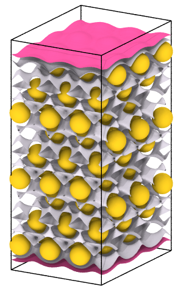

| Table of Contents | Create isosurface | Up |
|---|---|---|
| Prev | Modifiers | Next |
| Table of Contents | Create isosurface | Up |
|---|---|---|
| Prev | Modifiers | Next |
| Example: Two isosurfaces of charge density: |
|

|
This modifier computes an isosurface for a field quantity defined on a structured data grid. Note that the modifier is available only if a field quantity has been loaded. In the current program version, the only file parser that provides such data is the POSCAR reader, which can load charge densities computed by the VASP DFT code from CHGCAR files.
Note: The modifier may be applied several times to create multiple surfaces at different iso-levels.